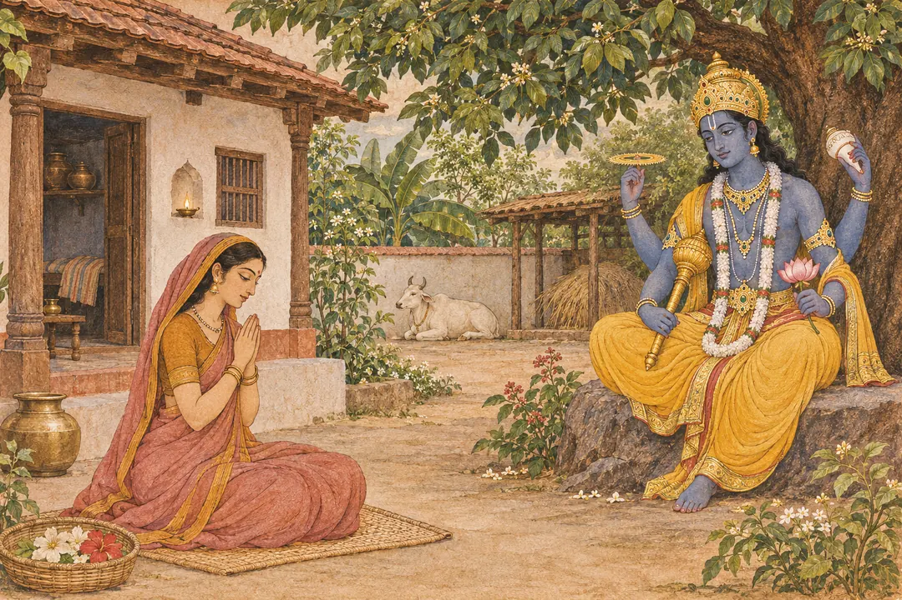
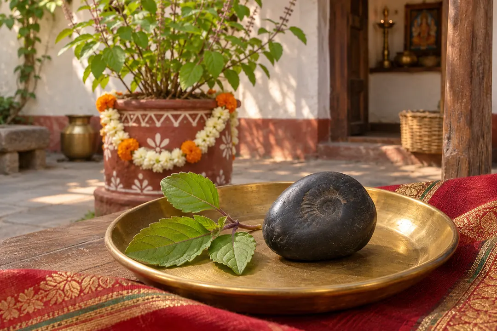

दृक पंचांग के अनुसार नई दिल्ली, भारत में तुलसी विवाह 21 नवंबर 2026 को, कार्तिक शुक्ल द्वादशी पर है। नई दिल्ली का पर्व पंचांग
देवउठनी एकादशीप्रबोधिनी, विष्णु के जागरण का दिन
तुलसी विवाहकार्तिक शुक्ल द्वादशी
कार्तिक पूर्णिमाकार्तिक मास की पूर्णिमा
नई दिल्ली के इसी पंचांग में वैष्णव और गौण देवउठनी एकादशी 21 नवंबर को सूचीबद्ध हैं। कुछ परिवार अपनी एकादशी पर ही विवाह करते हैं, कुछ द्वादशी पर और कुछ समुदाय कार्तिक पूर्णिमा तक अपनी परंपरा का दिन चुनते हैं। अपने परिवार या मंदिर का पंचांग देखें। दृक पंचांग · इस्कॉन रायचूर
नीदरलैंड्स। एम्स्टर्डम के स्थानीय पंचांग में देवउठनी एकादशी 20 नवंबर, तुलसी विवाह 21 नवंबर और कार्तिक पूर्णिमा 24 नवंबर को हैं। ये एम्स्टर्डम की स्थानीय तारीखें हैं। नवंबर में वहाँ मध्य यूरोपीय समय (CET) लागू है। इस लेख में केवल तारीखें दी गई हैं। पूजा का स्थानीय समय अपने शहर के पंचांग में देखें और सामुदायिक आयोजन का समय आयोजकों से पता करें। एम्स्टर्डम का पंचांग
जिस तुलसी को घर के लोग रोज़ जल देते हैं, विवाह की शाम उसी के ऊपर गन्ने का छोटा-सा मंडप सज सकता है। चौरे पर चुनरी रखी जाती है, फूल सजते हैं और पौधे के पास दीप जलता है। घर में विवाह की तैयारी है। जीवित पौधे में तुलसी देवी का पूजन होता है। वर के रूप में विष्णु का स्वागत शालिग्राम या विष्णु अथवा कृष्ण की प्रतिमा में होता है।
विवाह यानी शादी। मंडप वह छतरी है जिसके नीचे रस्में होती हैं। जिस चौरे या विशेष गमले में तुलसी लगाकर उसकी सेवा और पूजा की जाती है, उसे तुलसी वृंदावन भी कहते हैं। विवाह का वस्त्र, प्रार्थना और बाँटा हुआ प्रसाद रोज़ के आँगन में पूरे परिवार को इकट्ठा कर देते हैं। वैष्णव घरों में तुलसी के प्रति जो श्रद्धा दैनिक पूजा में दिखाई देती है, यहाँ उसे विवाह का रूप मिलता है। इस्कॉन नवी मुंबई · मुंबई क्षेत्र का धरोहर अध्ययन
तुलसी की पावन कथाएँ
भक्त देवी को वृंदा और तुलसी, दोनों नामों से पुकारते हैं। नीचे दिए गए पुराण-प्रसंगों में हर नाम अपनी कथा के साथ आता है। लोककथाएँ अक्सर दोनों प्रसंगों को साथ सुनाती हैं, खासकर जब वे बताती हैं कि तुलसी और शालिग्राम की पूजा साथ क्यों होती है। कथाओं को अलग-अलग पढ़ने से उनमें वृंदा और तुलसी की अपनी आवाज़ सुनाई देती है।

भक्ति-कला में वृंदा और विष्णु. एआई-निर्मित चित्र।
वृंदा और जलंधर
शिव पुराण में जलंधर देवताओं से युद्ध करता है और रणभूमि में शिव का सामना करता है। उसकी पत्नी वृंदा अशुभ स्वप्न देखकर व्याकुल होती हैं और वन की ओर जाती हैं। वहाँ एक तपस्वी सहायता का आश्वासन देता है। उसके कहने पर वृंदा के सामने जलंधर फिर जीवित दिखाई देता है। कुछ समय तक उन्हें लगता है कि उनके पति लौट आए हैं। जब उन्हें विष्णु का छल समझ आता है, वे उसका विरोध करती हैं। उनके शाप में विष्णु के अपनी पत्नी से बिछुड़ने की बात है। यह प्रसंग राम की सीता-खोज की याद दिलाता है। वृंदा अग्नि में प्रवेश करती हैं और विष्णु शोक में वहीं रह जाते हैं। शिव पुराण 2.5.23 · 2.5.24
बाद में वृंदा की चिता के स्थान पर बीज बोए जाते हैं। वहाँ तुलसी, धात्री यानी आँवला और मालती उगते हैं। ये पौधे विष्णु के शोक को शांत करने में सहायक होते हैं। पद्म पुराण के उत्तर खंड के अध्याय 15 में वृंदा सरोवर के तट पर ध्यान में बैठकर देह त्यागती हैं। उसी पुराण के एक अलग कार्तिक प्रसंग में तुलसी के बीज गौरी से जुड़े हैं। इन प्रसंगों में पौधे और वृंदा की स्मृति का संबंध है, पर कथा के अंत अलग हैं। शिव पुराण 2.5.26 · पद्म पुराण, उत्तर खंड 15 · 105
तुलसी और शंखचूड़
देवीभागवत पुराण में तुलसी का विवाह शंखचूड़ से हुआ है। एक कवच और उनके दांपत्य की अखंडता उसकी रक्षा करते हैं। जब शिव उससे युद्ध करते हैं, विष्णु ब्राह्मण के वेश में शंखचूड़ से कवच माँग लेते हैं। फिर वे उसके रूप में तुलसी के पास जाते हैं। सत्य समझ में आने पर तुलसी शंखचूड़ के लिए शोक करती हैं और विष्णु से सवाल करती हैं। वे उन्हें पत्थर-हृदय कहती हैं और पत्थर हो जाने का शाप देती हैं। देवीभागवत पुराण 9.23 · 9.24
इसी कथा में तुलसी दिव्य रूप धारण कर विष्णु के साथ जाती हैं। उनकी पार्थिव देह गंडकी नदी बनती है और उनके केशों से पूजन की तुलसी उत्पन्न होती है। विष्णु शाप स्वीकार करते हैं और गंडकी से जुड़ा शिला-रूप धारण करते हैं। इस कथा में पत्ती और शिला को साथ पूजने का अपना अर्थ है। इसमें तुलसी का विरोध भी याद रखा गया है और उसके बाद का पावन संबंध भी। देवीभागवत पुराण 9.24
ऊपर शिला बनने का शाप शंखचूड़ वाले प्रसंग में है। जलंधर की कुछ लोककथाओं में यही शाप वृंदा देती हैं। इस्कॉन रायचूर में प्रचलित कथा। ये आस्था की कथाएँ हैं और अलग-अलग स्रोत इन्हें अलग ढंग से सुनाते हैं।
विष्णु के लिए तुलसी का एक दल

तुलसी दल और शालिग्राम का एक चित्रित उदाहरण. एआई-निर्मित चित्र।
कई वैष्णव परंपराओं में विष्णु या कृष्ण को भोग और फूलों के साथ तुलसी दल अर्पित किया जाता है। अपने हाथों से सँभाले हुए पौधे की एक पत्ती भी घर की भेंट बन सकती है। देवीभागवत पुराण में कार्तिक में तुलसी अर्पण की महिमा और पौधे के प्रति आदर का वर्णन है। अगला अध्याय कार्तिक पूर्णिमा को तुलसी के जन्मोत्सव से भी जोड़ता है। देवीभागवत पुराण 9.24 · 9.25
शालिग्राम विष्णु के पवित्र स्वरूप के रूप में पूजे जाते हैं। बहुत-सी शालिग्राम शिलाएँ नेपाल की काली गंडकी घाटी में मिलने वाले गहरे रंग के अमोनाइट जीवाश्म हैं। कुछ पर सर्पिल या अन्य प्राकृतिक चिह्न दिखते हैं। विवाह में परिवार अपनी शिला को वर के रूप में तुलसी के पास विराजित कर सकता है। कुछ घरों में विष्णु या कृष्ण की प्रतिमा रखी जाती है। हॉली वॉल्टर्स का क्षेत्रीय शोध · इस्कॉन नवी मुंबई
जब विष्णु जागते हैं
चातुर्मास का अर्थ है चार महीने। एक प्रचलित वैष्णव गणना में यह अवधि आषाढ़ की देवशयनी एकादशी से आरंभ होती है, जब विष्णु के शयन की मान्यता है। कार्तिक की देवउठनी या प्रबोधिनी एकादशी के आसपास इसका समापन होता है। वर्षा ऋतु की इस अवधि में व्रत और उपासना का विशेष स्थान है। आरंभ और समापन की परंपराएँ समुदाय के अनुसार बदलती हैं। दृक पंचांग, चातुर्मास
जो परिवार चातुर्मास में मांगलिक विवाह स्थगित रखते हैं, उनके लिए विष्णु का जागरण और तुलसी विवाह फिर से विवाह का समय आने का संकेत हैं। इस भाव में पहला विवाह घर के आँगन में होता है। अपने परिवार के विवाह की तिथि लोग अपने पंचांग और रीति के अनुसार चुनते हैं। दृक पंचांग, चातुर्मास्य विधान
फूल सजाने से आरती तक
कोई परिवार कुछ दीपों और प्रार्थना के साथ विवाह मनाता है, तो कोई पड़ोसियों और रिश्तेदारों को बुलाता है। नीचे वे रस्में हैं जो किसी आयोजन में दिखाई दे सकती हैं। उनका क्रम, गीत और भूमिकाएँ स्थानीय रीति के अनुसार बदलती हैं। इस्कॉन नवी मुंबई · मुंबई क्षेत्र का धरोहर अध्ययन
विवाह के लिए फूलों और वस्त्र की तैयारी. एआई-निर्मित चित्र।दोनों पवित्र स्वरूपों के सामने परिवार की प्रार्थना. एआई-निर्मित चित्र।
आँगन की तैयारी। तुलसी के आसपास सफ़ाई होती है और चौरा सजाया जाता है। कुछ घरों में पास ही रंगोली बनती है।
मंडप सजाना। विवाह के लिए छोटा-सा मंडप खड़ा होता है। कहीं गन्ने के डंठल उसके खंभे बनते हैं और उन पर फूलों की मालाएँ लगती हैं।
तुलसी का शृंगार। चौरे के पास चुनरी, फूल या वधू के आभूषण सजाए जाते हैं। पौधे की पत्तियाँ खुली रहती हैं।
विष्णु का स्वागत। पौधे के पास छोटी थाली या आसन पर शालिग्राम विराजते हैं। कहीं घर की विष्णु या कृष्ण प्रतिमा लाई जाती है।
भेंट और प्रसाद। फूल, दीप, मौसमी फल और मिठाई रखे जा सकते हैं। प्रसाद परिवार की अपनी परंपरा के अनुसार बनता है।
विवाह की प्रार्थना। कहीं गीत गाए जाते हैं, कहीं मालाएँ और विवाह का वस्त्र रस्म का हिस्सा होते हैं। कुछ परंपराओं में परिक्रमा भी होती है।
आरती और प्रसाद। अंत में दीप से आरती होती है और उपस्थित लोगों में प्रसाद बाँटा जाता है।
पूजा की थाली में क्या होता है?
विवाह की पूजा सामग्री और भेंट के कुछ उदाहरण. एआई-निर्मित चित्र।
तुलसी चौरा और शालिग्राम
चौरे में जीवित पौधा रहता है। उसके पास छोटी थाली या आसन पर शालिग्राम रखकर पूजा की जा सकती है।
गन्ना और गेंदे के फूल
गन्ने के डंठल छोटे मंडप के खंभे बन सकते हैं। गेंदे की मालाएँ चौरे और मंडप को विवाह का रंग देती हैं।
चुनरी, फूल और मौली
लाल चुनरी वधू का स्थान सजाती है। फूल और मौली का उपयोग घर की रीति के अनुसार होता है।
दीया, पीतल की थाली और प्रसाद
मिट्टी या पीतल के दीये में पूजा की लौ जलती है। थाली में सामग्री रखी जाती है। मौसमी फल और मिठाई चढ़ाकर बाँटे जा सकते हैं।
उत्तर भारत। ब्रज के कुछ कृष्ण मंदिरों में विवाह की मालाएँ, गीत और शोभायात्रा आयोजन का हिस्सा होते हैं। घरों में परिवार अपने तुलसी चौरे के पास भी जुटते हैं। इस्कॉन रायचूर
महाराष्ट्र और गोवा। उरण के देउलवाड़ी के धरोहर अध्ययन में द्वादशी पर तुलसी के चौरे को गन्ने, आम के पत्तों और फूलों से सजाने का वर्णन है। कुछ मराठी रस्मों में दोनों पवित्र स्वरूपों के बीच रखा अंतरपाट विवाह के मंगलाष्टक के बाद हटाया जाता है। गोवा के एक मंदिर की प्रकाशित पर्व-सूची तुलसी विवाह कार्तिक शुक्ल द्वादशी पर रखती है। ये स्थानीय उदाहरण हैं। देउलवाड़ी धरोहर अध्ययन · इस्कॉन रायचूर · गोवा का राजपत्र
आंध्र प्रदेश और तेलंगाना। तेलुगु समुदायों में इसे तुलसी कल्याणम् कहते हैं। कई जगह यह क्षीराब्धि द्वादशी को होता है। कुछ परिवारों में विष्णु के स्वरूप के रूप में तुलसी के साथ आँवले की डाली रखी जाती है। अन्य वैष्णव मंदिर अपने कार्तिक के पंचांग के अनुसार पूर्णिमा पर भी विवाह रख सकते हैं। इस्कॉन रायचूर
प्रवासी परिवार। आँगन की तरह बगीचे या बालकनी का गमला भी पूजा का केंद्र बन सकता है। मंदिर समुदाय की सुविधा से सार्वजनिक कार्यक्रम तय कर सकते हैं। न्यू जर्सी के बर्लिन मंदिर ने 2025 में रविवार को तुलसी और शालिग्राम के विवाह का आयोजन घोषित किया था। 2026 के लिए अपने मंदिर की घोषणा और स्थानीय पंचांग अलग-अलग देखें। इंडिया टेंपल एसोसिएशन, न्यू जर्सी
तुलसी, जिसकी सेवा साल भर होती है
तुलसी, Ocimum tenuiflorum L., पुदीना कुल का सुगंधित पौधा है। क्यू के वनस्पति अभिलेख में इसका प्राकृतिक विस्तार उष्ण और उपोष्ण एशिया से पश्चिमी प्रशांत तक बताया गया है। कई घरों में पौधे को जल अर्पित करना और पास में दीप जलाना दैनिक पूजा का हिस्सा है। विवाह के दिन वही जीवित पौधा पूरे आयोजन का केंद्र बन जाता है। रॉयल बोटैनिक गार्डन्स, क्यू · देवीभागवत पुराण 9.25
तुलसी का उल्लेख भारत की पारंपरिक औषध सामग्री में भी मिलता है। पारंपरिक उपयोग का अभिलेख और चिकित्सकीय शोध अलग प्रश्नों के उत्तर देते हैं। इस लेख का विषय घर और उपासना में पौधे का स्थान है। भारत की सिद्ध औषध-संहिता
आँगन में जो रह जाता है
तुलसी चौरे के पास साँझ के दीप. एआई-निर्मित चित्र।
मेहमान चले जाएँगे और तुलसी वहीं रहेगी। कोई फिर उसे जल देगा, किसी को दादी का गाया गीत याद आएगा, और कोई बची हुई मिठाई पड़ोस में दे आएगा। साल भर निभाए जाने वाले संबंधों के लिए यह पर्व एक शाम समर्पित करता है। आज इसे अपने घर को सँभालने वाले लोगों और जीवित प्रकृति के प्रति भक्ति, कृतज्ञता और देखभाल पर सोचने का अवसर भी समझ सकते हैं।
सनातन सीरीज़ एक स्वतंत्र, ग़ैर-व्यावसायिक शैक्षिक ब्लॉग है। इस लेख में व्यक्तिगत शोध और सांस्कृतिक व्याख्या है। परिवारों और समुदायों की मान्यताएँ अलग हो सकती हैं। किसी सुधार के लिए संबंधित अंश और उसका स्रोत गिटहब पर भेजें। गिटहब पर सनातन सीरीज़